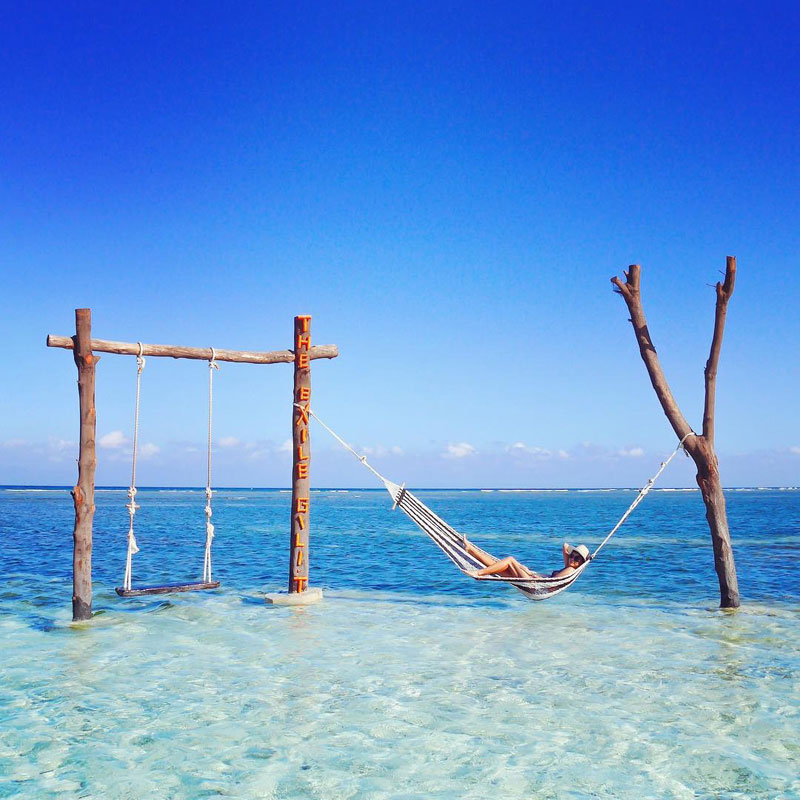

Gili Trawangan
Gili Trawangan merupakan pulau terbesar dan paling berkembang di antara tiga pulau Gili. Pulau ini dikenal karena suasananya yang paling hidup dan agak ramai, dengan banyak pilihan restoran, cafe, penginapan, dll. Ini membuat Gili Trawangan lebih cocok bagi wisatawan yang ingin menggabungkan wisata alam dengan suasana sosial, terutama pada sore hingga malam hari. Selain itu, tempat ini terkenal dengan kawasan sunset di sisi barat pulau yang menjadi tempat indah untuk menyaksikan matahari terbenam. Oleh karena itu, Gili Trawangan lebih digambarkan sebagai pusat aktivitas dan hiburan di antara ketiga pulau.